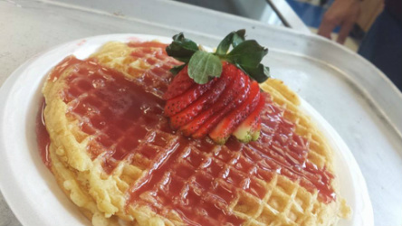

Cooking and baking.
Basic waffle batter recipe.
- 1 and 3/4 cups of all purpose flour.
- 2 tablespoons of sugar
- 1 tablespoon of baking powder
- 2 eggs
- 1 and 3/4 cups of milk
- 1 teaspoon of vanilla extract
Instructions for making a simple waffle.
- Combine your dry ingredients in a large bowl.
- In a separate bowl, beat wet ingredients and then add the dry , stirring JUST until moistened.
- Pour evenly into your waffle iron.
- Cook until golden brown or is how ever you like it.
Strawberry cream cheese muffins
- 8oz of cream cheese, softened
- 1/2 stick of butter
- 1 1/2 cups of sugar
- 2 eggs
- 1/2 cup of milk
- 1 teaspoon of vanilla flavoring/extract
- 2 cups of all purpose flour
- 1 1/2 teaspoons of baking powder
- 1/4 teaspoons of salt
- 1 cup of chopped strawberries.(fresh)
Baking instructions.
- Preheat oven 350 to degrees
- Cream together cream cheese, butter and sugar in a top-mixer. Add eggs,milk and vanilla and mix until just combined.
- In another bowl, whisk together flour,baking powder,baking soda and salt.Add dry ingredients to mixing bowl and mix until just combined.Do not over mix.Fold in strawberries.
- Spoon batter into paper lined muffin pans.Fill each cup about 3.4 high.Bake for about 20-25 minutes, until tops are golden.Cool on rack for at least 15 minutes.
Basic strawberry coulis

- 1 cup of frozen unsweetened strawberries
- 1/2 cup sugar
- 1 teaspoon lemon juice
How to make the coulis
- In a medium saucepan, combine the strawberries and sugar and lemon juice. Bring to a boil over medium-high heat. Transfer to a blender.
- Puree until smooth, then strain in a strainer, and set aside.
Fun fact, this will be able to last you in cold storage for a week.